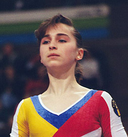

Ana Maria Bican (ROM)
1994 Jr. European AA Bronze
Medalist
1995 American Cup AA Silver
Medalist

Ana Maria was born on March 3,
1980, in Zarnesti. She began gymnastics at age 6 and eventually was
invited to join the national team in Deva. She was a member of the 1996
Olympic team but injured her knee
two days before the start of the
gymnastics competition. She never returned to competitive gymnastics.
Ana Maria eventually moved to the USA, coached in Michigan, and graduated from Saginaw Valley State University in 2007 with a Bachelor of Arts in International Studies. She began coaching at Buckeye
Gymnastics in December 2016.
Competition Results
1991
Jr. Balkan Championships: 3rd AA
1992
Avignon International: 4th AA
Grenoble International: 4th AA
Jr. European Team Championships: 1st Team
1993
Gander Memorial: 6th AA
Hungarian International: 13th AA
ROM Championships: 3rd AA, 2nd V, 2nd FX, 3rd UB
Swiss Cup: 5th Team
1994
Goodwill Games: 6th AA, 4th V, 4th B, 6th UB
Jr. European Championships: 3rd AA, 1st V, 7th UB, 7th B
Soapberry World Gym Challenge: 3rd AA, 1st V, 1st FX, 3rd UB
USA-ROM Dual Meet: 4th AA
1995
American Cup: 2nd AA
Intl. Championships of Romania: 4th AA, 3rd FX, 4th UB, 8th V
Intl. Mixed Pairs: 1st Team
ROM-GER Dual Meet: 1st Team, 9th AA
1996
ITA-BLR-ROM-RUS: 9th AA
Intl. Championships of Romania: 2nd AA, 1st B
World Stars: 3rd AA
This page was created on November
20, 2005 and was last updated on December 12, 2020.
© Gymn Forum